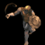
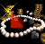
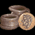
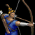
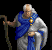
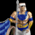
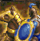
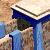
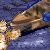

RM Brawl 1.8 Patch Notes
Multiple reverts and changes to match AOE:DE
Change-logs have been updated to match patch 1.8
Check this to see what all has changed since AOE Rise of Rome 1.0a
Check this to see what all has changed since UPatch 1.1 R4
Check this to see what all has changed since AOE:DE
Important changes
This patch contains a lot of small changes.
Most important changes are listed below.
 Nobility
Nobility
Food cost 175 -> 250
Gold cost 120 -> 180
Bonus All cavalry units, chariots and Camel Rider +15% Movement speed -> +8% movement speed
 Cavalry line, Scout, chariots, Camel Rider
Cavalry line, Scout, chariots, Camel Rider
Movement speed 1.74 -> 1.852
 Horse Archer
Horse Archer
Movement speed 1.91 -> 2.037
 Heavy Horse Archer
Heavy Horse Archer
Movement speed 2.09 -> 2.315
Wheel
Movement speed +0.55 -> +0.7
Research time 60s -> 75s
 Slinger
Slinger
Training time 30s -> 28s
Reload time 1.7s -> 1.5s
Heavy Slinger
Requires Bronze Age, Logistics
Food cost 180
Gold cost 120
Research time 90 seconds
Research location Barrack
Effect Slingers +10 hit points, +1 range and +3 armor base melee
 Bowman
Bowman
Range 5 -> 6
Line of sight 7 -> 8
Training time 30s -> 26s
 Stone Thrower
Stone Thrower
Attack walls - 5 -> 0
Attack buildings - 15 -> -10
Blast width 0.6 -> 0.65
Projectile speed 3.28 -> 3
Reload time 5.0 -> 5.375
 Catapult, Heavy Catapult
Catapult, Heavy Catapult
Blast width 1.0 -> 1.2
Projectile speed 3.28 -> 3
Reload time 5.0 -> 5.375
 Ballista tower
Ballista tower
Projectile speed 5.2 -> 4.9
Build time 80s -> 72s
Reload time 2.0 -> 3.1
Stone cost 135 -> 120
 Stone Mine
Stone Mine
Stone amount 200 -> 250
 Hoplite, Phalanx & Centurion
Hoplite, Phalanx & Centurion
Movement speed 0.95 -> 1.0
Aristocracy
Bonus movement speed +0.2375 -> +0.25
Coinage
Research time 30s X5 -> 60s
Gold cost 20 X5 -> 100
Food cost 40 X5 -> 200
Tribute efficiency 90% -> 100%
Bonus gold yielded 25% -> 5%
Market upgrades
Market upgrade changes had very little impact making them mostly redundant. Only changes remaining are added technology Pottery and Stone Minings cost increase.
 Market
Market
Wood cost 120 -> 150
 Farmer
Farmer
Work rate 0.4725 -> 0.45
Farm
Wood cost 60 -> 75
Food capacity 175 -> 250
Build time 30s -> 24s
Walkable false -> true
 Domestication
Domestication
Food cost 140 -> 200
Research time 80s -> 40s
 Plow
Plow
Food cost 200 -> 250
Food in Farms +75 -> +100
Research time 100s -> 75s
 Irrigation
Irrigation
Food in Farms +150 -> +125
Research time 120s -> 100s
Woodworking
Research time 80s -> 60s
 Artisanship
Artisanship
Research time 100s -> 80s
 Craftsmanship
Craftsmanship
Research time 120s -> 100s
 Gold Mining
Gold Mining
Research time 80s -> 50s
 Stone Mining
Stone Mining
Research time 80s -> 30s
 Siegecraft
Siegecraft
Research time 90s -> 60s
Pottery
Research time 90s -> 60s
General Changes
Much more reverts and changes to match AOE:DE
 Lion/Alligator
Lion/Alligator
Food amount 130 -> 120
Resource decay rate 0.4 -> 0.5
Improved Bowman
Reload time 1.5 -> 1.4
Armor Slinger - 4 -> -2
Composite Bowman
Armor Slinger - 4 -> -2
 Scale Armor Infantry
Scale Armor Infantry
Gold cost 125 -> 100
Food cost 75 -> 50
Scale Armor Cavalry
Gold cost 175 -> 200
Food cost 125 -> 150
 Chain Mail Infantry
Chain Mail Infantry
Gold cost 125 -> 100
Food cost 75 -> 50
 Chain Mail Cavalry
Chain Mail Cavalry
Gold cost 200 -> 225
Food cost 150 -> 175
 Camel Rider
Camel Rider
Training time 35s -> 32s
 Scythe Chariot
Scythe Chariot
Armor base melee 1 -> 0
Blast width 1.6 -> 1.5
Armor cavalry - 6 -> -4
 Scythe Chariot (upgrade)
Scythe Chariot (upgrade)
Research time 220s -> 150s
War Elephant
Training time 55s -> 50s
Armor base melee 1 -> 0
Blast width 1.6 -> 1.5
 Armored Elephant (research)
Armored Elephant (research)
Training time 55s -> 50s
Blast width 1.6 -> 1.5
Requirement Coinage -> Iron Shield
Priest
Armor priest - 5 -> -9
Chariot
Attack priest - 1 -> -2
Armor cavalry - 6 -> -4
 Chariot Archer
Chariot Archer
Attack priest - 3 -> none
Armor cavalry - 6 -> -4
 Long Swordsman
Long Swordsman
Hit points 110 -> 120
Cataphract (upgrade)
Research time 110s -> 100s
 Academy
Academy
Build time 45s -> 60s
Wood cost 175 -> 150
 Jihad -> Zealotry
Jihad -> Zealotry
Bonus movement speed +0.3 -> +0.11
Bonus hit points +15 -> +20
Research time 40s -> 60s
 Martyrdom -> Sacrifice
Martyrdom -> Sacrifice
 Logistics
Logistics
Bonus removed Barrack units +1 LOS
 Hill Country & Inland
Hill Country & Inland
All changes reverted to normal values
 Chariot Archer, Horse Archer & Heavy Horse Archer
Chariot Archer, Horse Archer & Heavy Horse Archer
Armor Slinger - 5 -> -4
 Siege Craft
Siege Craft
Villagers attack towers +10 -> +30
Villagers attack walls +35 -> +40
 Watch tower, Sentry Tower & Guard Tower
Watch tower, Sentry Tower & Guard Tower
Build time 80s -> 72s
Reload time 1.3 -> 1.5
Stone cost 135 -> 120
 Small Wall
Small Wall
Armor walls - 185 -> -175
 Cavalry, Heavy Cavalry & Cataphract
Cavalry, Heavy Cavalry & Cataphract
Attack walls - 175 -> -165
 Villager
Villager
Attack walls - 185 -> -175
 Medium Wall
Medium Wall
Armor walls - 175 -> -165
 Medium Wall (upgrade)
Medium Wall (upgrade)
Food cost 100 -> 180
Stone cost 180 -> 100
Fortified Wall
Hit points 625 -> 400
Fortified Wall (upgrade)
Food cost 150 -> 300
Stone cost 350 -> 175
 Ballista
Ballista
Projectile speed 5.2 -> 4.9
Reload time 3.0 -> 3.1
Attack tower -170 -> none
Attack walls -155 -> none
 Helepolis
Helepolis
Projectile speed 5.2 -> 4.9
Reload time 2.0 -> 1.95
Attack tower -160 -> none
Attack walls -145 -> none
 Trireme
Trireme
Projectile speed 5.2 -> 4.9
Reload time 2.0 -> 1.89
 All ships
All ships
Armor Flame - 30 -> none
 Scout Ship, War Galley & Trireme
Scout Ship, War Galley & Trireme
Training time 76s -> 70s
Armor slinger - 2 -> none
 Light Transport & Heavy transport
Light Transport & Heavy transport
Training time 96s -> 75s
 Catapult Trireme
Catapult Trireme
Projectile speed 3.28 -> 3.1
Reload time 5.0 -> 5.3
 Juggernaught
Juggernaught
Blast width 1.0 -> 1.2
Projectile speed 3.28 -> 3.1
Reload time 5.0 -> 5.3
 Juggernaught (upgrade)
Juggernaught (upgrade)
Food cost 1200 -> 1300
Wood cost 550 -> 700
Fire Galley
Attack tower -65 -> none
Attack walls -165 -> none
Attack buildings -170 -> none
Attack flame -18 -> none
Attack base melee 12 -> 24
 Alchemy
Alchemy
Bonus damage for Stone Thrower, Catapult, Heavy Catapult, Catapult Trireme & Juggernaught 2 -> 6
Fire Galley:
Attack tower +3 -> none
Attack walls +3 -> none
Attack buildings +5 -> none
Attack flame +3 -> none
Attack base melee +3 -> +6
 Stone Thrower, Catapult, Heavy Catapult
Stone Thrower, Catapult, Heavy Catapult
Attack villagers none -> 0
 Villagers
Villagers
Armor villagers none -> -5
Civilizations
Changing to match AOE:DE.
Coinage
Enabled for all civilizations (Egyptian, Hittite, Macedonian, Palmyra, Shang, Sumerian)
Assyrian
Bonus removed Villagers +10% movement speed
New bonus Villagers +3 carry capacity
Technologies enabled Fortification, Irrigation
Babylonian
Bonus Stone Thrower, Catapult, Heavy Catapult +30% blast radius -> +20% Blast radius
Technology disabled Heavy Cavalry
Technologies enabled Metallurgy, Irrigation
Choson
Technology disabled Alchemy
Technology enabled Catapult Trireme
Egyptian
Bonus Priest +2 range -> +3 range
Bonus Gold Miners work 30% faster -> 20% faster
Greek
Bonus War Ships move 25% faster -> All ships move 20% faster
Hittite
Bonus Catapults +66% hit points -> +50% hit points
Bonus Scout Ship and War Galley +2/3/4 range -> +3 range
Technologies enabled Guard Tower, Ballista Tower, Fortification, Armored Elephant, Aristocracy
Macedonian
Technologies enabled Guard Tower, Ballista Tower, Irrigation
Minoan
Technology enabled Irrigation
Palmyra
Bonus removed Starts game with +4 headroom
Bonus removed Town Centers work 10% faster
New bonus Market upgrades have no food cost
Technologies disabled Plow, Engineering
Technologies enabled Battle Axe, Broad Sword, Chariot Archer, Architecture, Cavalry, Heavy Cavalry, Catapult, Heavy Catapult, Ballista, Ballistics, Ballista Tower, Fortification, Alchemy
Persian
Technologies enabled Fortification, Alchemy
Phoenician
Technologies enabled Ballistics, Ballista Tower, Fortification
Roman
Technologies enabled Architecture, Fortification
Shang
Technology disabled Aristocracy
Technology enabled Irrigation
Sumerian
Bonus Farms have +75 food -> +125 food
Technologies disabled Metallurgy, Craftsmanship
Technologies enabled Bronze Shield, Alchemy, Chain Mail, Heavy Horse Archer
Yamato
Bonus removed Villagers +10% movement speed
Bonus All Cavalry units cost - 25% -> -20%
New bonus Villagers +3 carry capacity
Technologies disabled Broad Sword, Tower Shield
Technologies enabled Composite Bowman, Aristocracy
Bug fixes
Pottery
Required but didn't deduct resources.
 Elephant Archer
Elephant Archer
Shown attack was 5+1 and not 6.
 Babylonian
Babylonian
Slinger wasn't disabled.